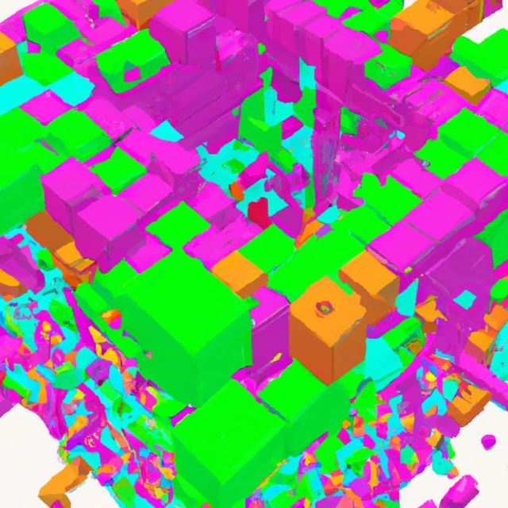

Uno de los temas más populares en el espacio de consenso digital es el concepto de Organizaciones Autónomas Descentralizadas DAO. Ahora hay una serie de grupos que se están involucrando rápidamente en el espacio, incluidos Bitshares (también conocidos como Invictus Innovations) que desarrollan “empresas autónomas descentralizadas”, David Johnston de BitAngels con aplicaciones descentralizadas, nuestro propio concepto de corporaciones autónomas descentralizadas que desde entonces se ha transformado en las “organizaciones autónomas descentralizadas” (DAO), mucho más generales y no necesariamente financieras; en general, es seguro decir que el “DAOísmo” está en camino de convertirse en una cuasi-ciber-religión. Sin embargo, uno de los problemas ocultos que acechan debajo del espacio es bastante evidente: nadie sabe siquiera qué significan todos estos términos individuales.
¿Qué es exactamente una organización descentralizada, cuál es la diferencia entre una organización y una aplicación, y qué hace que algo sea autónomo en primer lugar? Muchos de nosotros nos hemos sentido frustrados por la falta de terminología coherente aquí; como señala Daniel Larimer de Bitshares, “todo el mundo piensa que un DAC es solo una forma de realizar una oferta pública inicial de su empresa centralizada”. La intención de este artículo será profundizar en algunos de estos conceptos y ver si podemos encontrar al menos el comienzo de una comprensión coherente de lo que son todas estas cosas en realidad.
Contratos inteligentes
Un contrato inteligente es la forma más simple de automatización descentralizada, y se define con mayor facilidad y precisión de la siguiente manera: un contrato inteligente es un mecanismo que involucra activos digitales y dos o más partes, donde algunas o todas las partes colocan activos y los activos son automáticamente redistribuidos entre esas partes según una fórmula basada en ciertos datos que se desconocen en el momento en que se inicia el contrato.
Un ejemplo de contrato inteligente sería un contrato de trabajo: A quiere pagar $ 500 a B para construir un sitio web. El contrato funcionaría de la siguiente manera: A pone $ 500 en el contrato y los fondos se bloquean. Cuando B termina el sitio web, B puede enviar un mensaje al contrato solicitando desbloquear los fondos. Si A está de acuerdo, se liberan los fondos. Si B decide no terminar el sitio web, B puede hacerlo enviando un mensaje para ceder los fondos. Si B afirma que terminó el sitio web, pero A no está de acuerdo, luego de un período de espera de 7 días, le corresponde al juez J emitir un veredicto a favor de A o B.
La propiedad clave de un contrato inteligente es simple: solo hay un número fijo de partes. No es necesario conocer todas las partes en el momento de la inicialización; una orden de venta, donde A ofrece vender 50 unidades del activo A a cualquiera que pueda proporcionar 10 unidades del activo B, también es un contrato inteligente. Los contratos inteligentes pueden durar para siempre; Los contratos de cobertura y los contratos de depósito en garantía son buenos ejemplos. Sin embargo, los contratos inteligentes que se ejecutan para siempre deben tener un número fijo de partes (por ejemplo, un intercambio descentralizado completo no es un contrato inteligente), y los contratos que no están destinados a existir para siempre son contratos inteligentes porque existir por un tiempo finito necesariamente implica la participación de un número finito de partes.
Tenga en cuenta que aquí hay un área gris: los contratos que son finitos en un lado, pero infinitos en el otro lado. Por ejemplo, si quiero cubrir el valor de mis activos digitales, es posible que desee crear un contrato en el que cualquiera pueda entrar y salir libremente. Por lo tanto, el otro lado del contrato, las partes que están especulando sobre el activo con un apalancamiento de 2x, tiene un número ilimitado de partes, pero mi parte del contrato no. Aquí, propongo la siguiente división: si el lado con un número limitado de partes es el lado que pretende recibir un servicio específico (es decir, es un consumidor), entonces es un contrato inteligente; sin embargo, si el lado con un número limitado de partes está solo con fines de lucro (es decir, es un productor), entonces no lo es.
Agentes autónomos
Los agentes autónomos están al otro lado del espectro de la automatización; en un agente autónomo, no hay ninguna participación humana específica necesaria en absoluto; es decir, si bien podría ser necesario cierto grado de esfuerzo humano para construir el hardware en el que se ejecuta el agente, no es necesario que exista ningún humano que esté al tanto de la existencia del agente. Un ejemplo de un agente autónomo que ya existe hoy sería un virus informático; el virus sobrevive replicándose de una máquina a otra sin una acción humana deliberada, y existe casi como un organismo biológico. Una entidad más benigna sería un servicio de computación en la nube descentralizado y autorreplicante; dicho sistema comenzaría a ejecutar un negocio automatizado en un servidor privado virtual, y luego, una vez que aumentaran sus ganancias, alquilaría otros servidores e instalaría su propio software en ellos, agregándolos a su red.
Un agente completamente autónomo, o una inteligencia artificial completa, es el sueño de la ciencia ficción; tal entidad podría adaptarse a cambios arbitrarios en las circunstancias, e incluso expandirse para fabricar el hardware necesario para ello.
propia sostenibilidad en teoría. Entre eso, y los agentes de propósito único como los virus informáticos, hay una amplia gama de posibilidades, en una escala que puede describirse alternativamente como inteligencia o versatilidad. Por ejemplo, el servicio de nube autorreplicante, en su forma más simple, solo podría alquilar servidores de un conjunto específico de proveedores (por ejemplo, Amazon, Microtronix y Namecheap). Sin embargo, una versión más compleja debería ser capaz de descubrir cómo alquilar un servidor de cualquier proveedor con solo un enlace a su sitio web, y luego usar cualquier motor de búsqueda para localizar nuevos sitios web (y, por supuesto, nuevos motores de búsqueda en caso de que Google falla). El siguiente nivel a partir de ahí implicaría actualizar su propio software, quizás usando algoritmos evolutivos, o ser capaz de adaptarse a nuevos paradigmas de alquiler de servidores (por ejemplo, hacer ofertas para que los usuarios comunes instalen su software y ganen fondos con sus computadoras de escritorio), y luego el penúltimo paso consiste en poder descubrir e ingresar a nuevas industrias (el último paso, por supuesto, es generalizar completamente en una IA completa).
Los agentes autónomos son algunas de las cosas más difíciles de crear, porque para tener éxito necesitan poder navegar en un entorno que no solo es complicado y cambia rápidamente, sino también hostil. Si un proveedor de alojamiento web quiere ser inescrupuloso, podría localizar específicamente todas las instancias del servicio y luego reemplazarlas con nodos que hagan trampa de alguna manera; un agente autónomo debe ser capaz de detectar tal trampa y eliminar o al menos neutralizar los nodos de trampa del sistema.
Aplicaciones descentralizadas<
Una aplicación descentralizada es similar a un contrato inteligente, pero diferente en dos aspectos clave. En primer lugar, una aplicación descentralizada tiene un número ilimitado de participantes en todos los lados del mercado. En segundo lugar, una aplicación descentralizada no tiene por qué ser necesariamente financiera. Debido a este segundo requisito, las aplicaciones descentralizadas son en realidad algunas de las cosas más fáciles de escribir (o al menos, eran las más fáciles antes de que aparecieran las plataformas de consenso digital generalizado). Por ejemplo, BitTorrent califica como una aplicación descentralizada, al igual que Popcorn Time, BitMessage, Tor y Maidsafe (tenga en cuenta que Maidsafe también es una plataforma para otras aplicaciones descentralizadas).
Generalmente, las aplicaciones descentralizadas se dividen en dos clases, probablemente con un área gris sustancial entre las dos. La primera clase es una aplicación descentralizada completamente anónima. Aquí, no importa quiénes son los nodos; cada participante es esencialmente anónimo y el sistema se compone de una serie de interacciones atómicas instantáneas. BitTorrent y BitMessage son ejemplos de esto. La segunda clase es una aplicación descentralizada basada en la reputación, donde el sistema (o al menos los nodos del sistema) realiza un seguimiento de los nodos y los nodos mantienen el estado dentro de la aplicación con un mecanismo que se mantiene puramente con el propósito de garantizar la confianza. El estatus no debe ser transferible ni tener valor monetario de facto. Maidsafe es un ejemplo de esto. Por supuesto, la pureza es imposible: incluso un sistema similar a BitTorrent necesita que los pares mantengan estadísticas similares a la reputación de otros pares con fines anti-DDoS; sin embargo, el papel que juegan estas estadísticas es puramente secundario y de alcance muy limitado.
Un área gris interesante entre las aplicaciones descentralizadas y “algo más” son las aplicaciones como Bitcoin y Namecoin; estos se diferencian de las aplicaciones tradicionales porque crean ecosistemas y existe un concepto de propiedad virtual que tiene valor dentro del contexto de este ecosistema, en el caso de Bitcoin, bitcoins y en el caso de Namecoin, namecoins y nombres de dominio. Como veremos a continuación, mi clasificación de organizaciones autónomas descentralizadas toca tales conceptos y no está muy claro exactamente dónde se ubican.
Organizaciones descentralizadas
En general, una organización humana se puede definir como una combinación de dos cosas: un conjunto de propiedades y un protocolo para un conjunto de individuos, que pueden o no estar divididos en ciertas clases con diferentes condiciones para entrar o salir del conjunto, para interactuar entre sí, incluidas las reglas sobre las circunstancias en las que las personas pueden utilizar determinadas partes de la propiedad. Por ejemplo, considere una corporación simple que administra una cadena de tiendas. La corporación tiene tres clases de miembros: inversionistas, empleados y clientes. La regla de membresía para los inversores es la de una porción de propiedad virtual de tamaño fijo (u opcionalmente de tamaño ajustable por quórum); compras una propiedad virtual para entrar y te conviertes en inversor hasta que vendas tus acciones. Los empleados deben ser contratados por inversores u otros empleados específicamente autorizados por inversores (u otros empleados autorizados por otros empleados autorizados por inversores, y así sucesivamente de forma recursiva) para participar, y también pueden ser despedidos de la misma manera, y los clientes son un abierto -sistema de membresía donde cualquiera puede interactuar libremente con la tienda de la manera obvia y oficialmente autorizada en cualquier momento. Supliers, en este modelo, son equivalentes a empleados. Una organización benéfica sin fines de lucro tiene una estructura algo diferente, que involucra a donantes y miembros (los beneficiarios de la organización benéfica pueden o no ser considerados miembros; la visión alternativa considera los incrementos positivos en el bienestar de los destinatarios como un “producto” de la organización benéfica).
La idea de una organización descentralizada toma el mismo concepto de organización y lo descentraliza. En lugar de una estructura jerárquica administrada por un conjunto de humanos que interactúan en persona y controlan la propiedad a través del sistema legal, una organización descentralizada implica un conjunto de humanos que interactúan entre sí de acuerdo con un protocolo especificado en el código y aplicado en la cadena de bloques. Una DO puede o no hacer uso del sistema legal para alguna protección de su propiedad física, pero incluso allí, tal uso es secundario. Por ejemplo, uno puede tomar la corporación propiedad de los accionistas anterior y trasplantarla por completo en la cadena de bloques; un contrato de larga duración basado en blockchain mantiene un registro de las tenencias de acciones de cada individuo, y la votación en blockchain permitiría a los accionistas seleccionar los puestos de la junta directiva y los empleados. Los sistemas de propiedad inteligente también se pueden integrar en la cadena de bloques directamente, lo que potencialmente permite que las DO controlen vehículos, cajas de seguridad y edificios.
Organismos autónomos descentralizados
Aquí, entramos en lo que es quizás el santo grial, lo que tiene la definición más oscura de todas: organizaciones autónomas descentralizadas y su subclase corporativa, corporaciones autónomas descentralizadas (o, más recientemente, “empresas”). El ideal de una organización autónoma descentralizada es fácil de describir: es una entidad que vive en Internet y existe de forma autónoma, pero también depende en gran medida de la contratación de personas para realizar ciertas tareas que el autómata por sí mismo no puede hacer.
Dado lo anterior, la parte importante de la definición es en realidad centrarse en lo que no es un DAO y lo que no es un DAO y, en cambio, es un DO, un DA o un agente / AI automatizado. Primero que nada, consideremos los DA. La principal diferencia entre un DA y un DAO es que un DAO tiene capital interno; es decir, un DAO contiene algún tipo de propiedad interna que es valiosa de alguna manera y tiene la capacidad de usar esa propiedad como un mecanismo para recompensar ciertas actividades. BitTorrent no tiene propiedad interna, y los sistemas similares a Bitcloud / Maidsafe tienen reputación, pero esa reputación no es un activo vendible. Bitcoin y Namecoin, por otro lado, sí. Sin embargo, las antiguas DO también tienen capital interno, al igual que los agentes autónomos.
En segundo lugar, podemos analizar las DO. La diferencia obvia entre un DO y un DAO, y la inherente al lenguaje, es la palabra “autónoma”; es decir, en un DO los humanos son los que toman las decisiones, y un DAO es algo que, de alguna manera, toma decisiones por sí mismo. Esta es una distinción sorprendentemente difícil de definir porque, como las dictaduras siempre están dispuestas a señalar, realmente no hay diferencia entre un determinado conjunto de actores que toman decisiones directamente y ese conjunto de actores que controlan toda la información a través de la cual se toman las decisiones. En Bitcoin, un ataque del 51% entre un pequeño número de grupos de minería puede hacer que la cadena de bloques invierta transacciones, y en una hipotética corporación autónoma descentralizada, los proveedores de las entradas de datos pueden coludirse para hacer que el DAC piense que enviar todo su dinero a1FxkfJQLJTXpW6QmxGT6oF43ZH959ns8Cq constituye pagar por un millón de nodos de potencia informática durante diez años. Sin embargo, es obvio que existe una distinción significativa entre los dos, por lo que necesitamos definirla.
Mi propio esfuerzo por definir la diferencia es el siguiente. Los DO y los DAO son vulnerables a los ataques de colusión, donde (en el mejor de los casos) una mayoría o (en el peor de los casos) un porcentaje significativo de un cierto tipo de miembros se confabulan para dirigir específicamente la actividad del D * O. Sin embargo, la diferencia es la siguiente: en una colusión DAO, los ataques se tratan como un error, mientras que en una DO son una característica. En una democracia, por ejemplo, el punto es que una pluralidad de miembros elige lo que más les gusta y esa solución se ejecuta; en Bitcoin, por otro lado, el comportamiento “predeterminado” que ocurre cuando todos actúan de acuerdo con el interés individual sin ningún deseo de un resultado específico es la intención, y un ataque del 51% para favorecer una cadena de bloques específica es una aberración. Esta apelación al consenso social es similar a la definición de gobierno: si una pandilla local comienza a cobrar un impuesto a la propiedad a todos los propietarios de tiendas, incluso puede salirse con la suya en ciertas partes del mundo, pero ninguna parte significativa de la población tratará como legítimo, mientras que si un gobierno comienza a hacer lo mismo, la respuesta pública se inclinará en la otra dirección.
Bitcoin es un caso interesante aquí. En general, parece estar mucho más cerca de un DAO que de un DO. Sin embargo, hubo un incidente en 2013 en el que la realidad resultó ser bastante diferente. Lo que pasó fue que un bloque excepcional se produjo 'accidentalmente', que fue tratado como válido según los clientes de BitcoinQt 0.8, pero no válido según las reglas de BitcoinQt 0.7. La cadena de bloques se bifurcó, con algunos nodos siguiendo la cadena de bloques después de este bloque excepcional (llamaremos a esta cadena B1), y los otros nodos que vieron ese bloque como inválido trabajando en una cadena de bloques separada (que llamaremos B2). La mayoría de los grupos de minería se habían actualizado a BitcoinQt 0.8, por lo que siguieron B1, pero la mayoría de los usuarios todavía estaban en 0.7 y, por lo tanto, siguieron B2. Los operadores del grupo de minería se reunieron en el chat de IRC y acordaron cambiar sus grupos a la minería en B2, ya que ese resultado sería más simple para los usuarios porque no les requeriría actualizar, y después de seis horas, la cadena B2 superó a B1 como resultado. de esta acción deliberada, y B1 se apartó. Por lo tanto, en este caso, hubo un ataque deliberado del 51% que la comunidad consideró legítimo, lo que convirtió a Bitcoin en un DO en lugar de un DAO. En la mayoría de los casos, sin embargo, esto no sucede, por lo que la mejor forma de clasificar Bitcoin sería como DAO con una imperfección en su implementación de autonomía.
Sin embargo, otros no se contentan con clasificar Bitcoin como DAO, porque en realidad no es lo suficientemente inteligente. Bitcoin no piensa, no sale y “contrata” personas con la excepción del protocolo de minería, y sigue reglas simples cuyo proceso de actualización es más parecido a DO que a DAO. Las personas con este punto de vista verían un DAO como algo que tiene un alto grado de inteligencia autónoma propia. Sin embargo, el problema con este punto de vista es que debe haber una distinción entre un DAO y un AA / AI. La distinción aquí es posiblemente la siguiente: una IA es completamente autónoma, mientras que una DAO todavía requiere una gran participación de los humanos que interactúan específicamente de acuerdo con un protocolo definido por la DAO para operar. Podemos clasificar DAO, DO (y OS simples), AI y una cuarta categoría, robots viejos simples, de acuerdo con un buen gráfico de cuadrantes antiguo, con otro gráfico de cuadrantes para clasificar las entidades que no tienen capital interno, por lo tanto, forman un cubo:
DAO == automatización en el centro, humanos en los bordes. Por lo tanto, en general, tiene más sentido ver a Bitcoin y Namecoin como DAO, aunque apenas cruzan el umbral de la marca DA. La otra distinción importante es el capital interno; un DAO sin capital interno es un DA y una organización sin capital interno es un foro; el G8, por ejemplo, calificaría como un foro. Los países en desarrollo en el gráfico anterior son “comunidades descentralizadas”; un ejemplo de eso podría ser algo así como un Reddit descentralizado, donde hay una plataforma descentralizada, pero también hay una comunidad alrededor de esa plataforma, y es algo ambiguo si la comunidad o el protocolo están realmente “a cargo”.
Corporaciones autónomas descentralizadas
Las corporaciones / empresas autónomas descentralizadas son un tema más pequeño, porque son básicamente una subclase de DAO, pero vale la pena mencionarlos. Dado que el principal exponente de DAC como terminología es Daniel Larimer, tomaremos prestado como definición el punto que él mismo promueve consistentemente: un DAC paga dividendos. Es decir, existe un concepto de acciones en un DAC que se pueden comprar y negociar de alguna manera, y esas acciones potencialmente dan derecho a sus tenedores a recibir recibos continuos en función del éxito del DAC. Un DAO es una organización sin fines de lucro; aunque puede ganar dinero en un DAO, la forma de hacerlo es participando en su ecosistema y no invirtiendo en el DAO en sí. Obviamente, esta distinción es turbia; todos los DAO contienen capital interno que se puede poseer, y el valor de ese capital interno puede aumentar fácilmente a medida que el DAO se vuelve más poderoso / popular, por lo que una gran parte de los DAO inevitablemente serán similares a DAC hasta cierto punto.
Por lo tanto, la distinción es más fluida y depende del énfasis: ¿en qué medida son los dividendos el punto principal y en qué medida se trata de ganar tokens por participación? Además, ¿en qué medida existe el concepto de “participación” en contraposición a la simple propiedad virtual? Por ejemplo, una membresía en una junta sin fines de lucro no es realmente una participación, porque la membresía con frecuencia se otorga y confisca a voluntad, algo que sería inaceptable para algo clasificado como propiedad de inversión, y un bitcoin no es una participación porque un bitcoin no da derecho a usted a cualquier reclamo sobre ganancias o capacidad de toma de decisiones dentro del sistema, mientras que una acción en una corporación definitivamente es una acción. Al final, tal vez la distinción podría ser en última instancia el punto sorprendentemente oscuro de si el mecanismo de ganancias y el mecanismo de consenso son lo mismo o no.
Las definiciones anteriores aún no están cerca de completarse; Es probable que haya áreas grises y huecos en ellas, y exactamente qué tipo de automatización debe tener un DO antes de convertirse en DAO es una pregunta muy difícil de responder. Además, también está la cuestión de cómo deben construirse todas estas cosas.
Existen como una red de servidores privados, cada uno de los cuales ejecuta a menudo código local propietario, mientras que un DO debe ser completamente de código abierto y basado en blockchain. Entre esos dos extremos, hay una gran cantidad de paradigmas diferentes a seguir. ¿Qué cantidad de inteligencia debería estar en el código central? ¿Deberían usarse algoritmos genéticos para actualizar el código, o debería ser futarquía o algún mecanismo de votación o verificación basado en individuos? ¿La membresía debe ser de estilo corporativo, con acciones vendibles y transferibles, o de estilo sin fines de lucro, donde los miembros pueden votar dentro y fuera de otros miembros? ¿Deberían las cadenas de bloques ser una prueba de trabajo, una prueba de participación o una base de reputación? ¿Deberían los DAO tratar de mantener saldos en otras monedas, o solo deberían recompensar el comportamiento emitiendo su propio token interno? Todos estos son problemas difíciles y apenas hemos comenzado a rascar la superficie de ellos.
Organizaciones Autónomas Descentralizadas
2022 Ene 21 index
Uno de los temas más populares en el espacio de consenso digital es el concepto de Organizaciones Autónomas Descentralizadas DAO. Ahora hay una serie de grupos que se están involucrando rápidamente en el espacio, incluidos Bitshares (también conocidos como Invictus Innovations) que desarrollan “empresas autónomas descentralizadas”, David Johnston de BitAngels con aplicaciones descentralizadas, nuestro propio concepto de corporaciones autónomas descentralizadas que desde entonces se ha transformado en las “organizaciones autónomas descentralizadas” (DAO), mucho más generales y no necesariamente financieras; en general, es seguro decir que el “DAOísmo” está en camino de convertirse en una cuasi-ciber-religión. Sin embargo, uno de los problemas ocultos que acechan debajo del espacio es bastante evidente: nadie sabe siquiera qué significan todos estos términos individuales.
¿Qué es exactamente una organización descentralizada, cuál es la diferencia entre una organización y una aplicación, y qué hace que algo sea autónomo en primer lugar? Muchos de nosotros nos hemos sentido frustrados por la falta de terminología coherente aquí; como señala Daniel Larimer de Bitshares, “todo el mundo piensa que un DAC es solo una forma de realizar una oferta pública inicial de su empresa centralizada”. La intención de este artículo será profundizar en algunos de estos conceptos y ver si podemos encontrar al menos el comienzo de una comprensión coherente de lo que son todas estas cosas en realidad.
Contratos inteligentes
Un contrato inteligente es la forma más simple de automatización descentralizada, y se define con mayor facilidad y precisión de la siguiente manera: un contrato inteligente es un mecanismo que involucra activos digitales y dos o más partes, donde algunas o todas las partes colocan activos y los activos son automáticamente redistribuidos entre esas partes según una fórmula basada en ciertos datos que se desconocen en el momento en que se inicia el contrato. Un ejemplo de contrato inteligente sería un contrato de trabajo: A quiere pagar $ 500 a B para construir un sitio web. El contrato funcionaría de la siguiente manera: A pone $ 500 en el contrato y los fondos se bloquean. Cuando B termina el sitio web, B puede enviar un mensaje al contrato solicitando desbloquear los fondos. Si A está de acuerdo, se liberan los fondos. Si B decide no terminar el sitio web, B puede hacerlo enviando un mensaje para ceder los fondos. Si B afirma que terminó el sitio web, pero A no está de acuerdo, luego de un período de espera de 7 días, le corresponde al juez J emitir un veredicto a favor de A o B.
La propiedad clave de un contrato inteligente es simple: solo hay un número fijo de partes. No es necesario conocer todas las partes en el momento de la inicialización; una orden de venta, donde A ofrece vender 50 unidades del activo A a cualquiera que pueda proporcionar 10 unidades del activo B, también es un contrato inteligente. Los contratos inteligentes pueden durar para siempre; Los contratos de cobertura y los contratos de depósito en garantía son buenos ejemplos. Sin embargo, los contratos inteligentes que se ejecutan para siempre deben tener un número fijo de partes (por ejemplo, un intercambio descentralizado completo no es un contrato inteligente), y los contratos que no están destinados a existir para siempre son contratos inteligentes porque existir por un tiempo finito necesariamente implica la participación de un número finito de partes.
Tenga en cuenta que aquí hay un área gris: los contratos que son finitos en un lado, pero infinitos en el otro lado. Por ejemplo, si quiero cubrir el valor de mis activos digitales, es posible que desee crear un contrato en el que cualquiera pueda entrar y salir libremente. Por lo tanto, el otro lado del contrato, las partes que están especulando sobre el activo con un apalancamiento de 2x, tiene un número ilimitado de partes, pero mi parte del contrato no. Aquí, propongo la siguiente división: si el lado con un número limitado de partes es el lado que pretende recibir un servicio específico (es decir, es un consumidor), entonces es un contrato inteligente; sin embargo, si el lado con un número limitado de partes está solo con fines de lucro (es decir, es un productor), entonces no lo es.
Agentes autónomos
Los agentes autónomos están al otro lado del espectro de la automatización; en un agente autónomo, no hay ninguna participación humana específica necesaria en absoluto; es decir, si bien podría ser necesario cierto grado de esfuerzo humano para construir el hardware en el que se ejecuta el agente, no es necesario que exista ningún humano que esté al tanto de la existencia del agente. Un ejemplo de un agente autónomo que ya existe hoy sería un virus informático; el virus sobrevive replicándose de una máquina a otra sin una acción humana deliberada, y existe casi como un organismo biológico. Una entidad más benigna sería un servicio de computación en la nube descentralizado y autorreplicante; dicho sistema comenzaría a ejecutar un negocio automatizado en un servidor privado virtual, y luego, una vez que aumentaran sus ganancias, alquilaría otros servidores e instalaría su propio software en ellos, agregándolos a su red. Un agente completamente autónomo, o una inteligencia artificial completa, es el sueño de la ciencia ficción; tal entidad podría adaptarse a cambios arbitrarios en las circunstancias, e incluso expandirse para fabricar el hardware necesario para ello.
propia sostenibilidad en teoría. Entre eso, y los agentes de propósito único como los virus informáticos, hay una amplia gama de posibilidades, en una escala que puede describirse alternativamente como inteligencia o versatilidad. Por ejemplo, el servicio de nube autorreplicante, en su forma más simple, solo podría alquilar servidores de un conjunto específico de proveedores (por ejemplo, Amazon, Microtronix y Namecheap). Sin embargo, una versión más compleja debería ser capaz de descubrir cómo alquilar un servidor de cualquier proveedor con solo un enlace a su sitio web, y luego usar cualquier motor de búsqueda para localizar nuevos sitios web (y, por supuesto, nuevos motores de búsqueda en caso de que Google falla). El siguiente nivel a partir de ahí implicaría actualizar su propio software, quizás usando algoritmos evolutivos, o ser capaz de adaptarse a nuevos paradigmas de alquiler de servidores (por ejemplo, hacer ofertas para que los usuarios comunes instalen su software y ganen fondos con sus computadoras de escritorio), y luego el penúltimo paso consiste en poder descubrir e ingresar a nuevas industrias (el último paso, por supuesto, es generalizar completamente en una IA completa). Los agentes autónomos son algunas de las cosas más difíciles de crear, porque para tener éxito necesitan poder navegar en un entorno que no solo es complicado y cambia rápidamente, sino también hostil. Si un proveedor de alojamiento web quiere ser inescrupuloso, podría localizar específicamente todas las instancias del servicio y luego reemplazarlas con nodos que hagan trampa de alguna manera; un agente autónomo debe ser capaz de detectar tal trampa y eliminar o al menos neutralizar los nodos de trampa del sistema.
Aplicaciones descentralizadas<
Una aplicación descentralizada es similar a un contrato inteligente, pero diferente en dos aspectos clave. En primer lugar, una aplicación descentralizada tiene un número ilimitado de participantes en todos los lados del mercado. En segundo lugar, una aplicación descentralizada no tiene por qué ser necesariamente financiera. Debido a este segundo requisito, las aplicaciones descentralizadas son en realidad algunas de las cosas más fáciles de escribir (o al menos, eran las más fáciles antes de que aparecieran las plataformas de consenso digital generalizado). Por ejemplo, BitTorrent califica como una aplicación descentralizada, al igual que Popcorn Time, BitMessage, Tor y Maidsafe (tenga en cuenta que Maidsafe también es una plataforma para otras aplicaciones descentralizadas).
Generalmente, las aplicaciones descentralizadas se dividen en dos clases, probablemente con un área gris sustancial entre las dos. La primera clase es una aplicación descentralizada completamente anónima. Aquí, no importa quiénes son los nodos; cada participante es esencialmente anónimo y el sistema se compone de una serie de interacciones atómicas instantáneas. BitTorrent y BitMessage son ejemplos de esto. La segunda clase es una aplicación descentralizada basada en la reputación, donde el sistema (o al menos los nodos del sistema) realiza un seguimiento de los nodos y los nodos mantienen el estado dentro de la aplicación con un mecanismo que se mantiene puramente con el propósito de garantizar la confianza. El estatus no debe ser transferible ni tener valor monetario de facto. Maidsafe es un ejemplo de esto. Por supuesto, la pureza es imposible: incluso un sistema similar a BitTorrent necesita que los pares mantengan estadísticas similares a la reputación de otros pares con fines anti-DDoS; sin embargo, el papel que juegan estas estadísticas es puramente secundario y de alcance muy limitado. Un área gris interesante entre las aplicaciones descentralizadas y “algo más” son las aplicaciones como Bitcoin y Namecoin; estos se diferencian de las aplicaciones tradicionales porque crean ecosistemas y existe un concepto de propiedad virtual que tiene valor dentro del contexto de este ecosistema, en el caso de Bitcoin, bitcoins y en el caso de Namecoin, namecoins y nombres de dominio. Como veremos a continuación, mi clasificación de organizaciones autónomas descentralizadas toca tales conceptos y no está muy claro exactamente dónde se ubican.
Organizaciones descentralizadas
En general, una organización humana se puede definir como una combinación de dos cosas: un conjunto de propiedades y un protocolo para un conjunto de individuos, que pueden o no estar divididos en ciertas clases con diferentes condiciones para entrar o salir del conjunto, para interactuar entre sí, incluidas las reglas sobre las circunstancias en las que las personas pueden utilizar determinadas partes de la propiedad. Por ejemplo, considere una corporación simple que administra una cadena de tiendas. La corporación tiene tres clases de miembros: inversionistas, empleados y clientes. La regla de membresía para los inversores es la de una porción de propiedad virtual de tamaño fijo (u opcionalmente de tamaño ajustable por quórum); compras una propiedad virtual para entrar y te conviertes en inversor hasta que vendas tus acciones. Los empleados deben ser contratados por inversores u otros empleados específicamente autorizados por inversores (u otros empleados autorizados por otros empleados autorizados por inversores, y así sucesivamente de forma recursiva) para participar, y también pueden ser despedidos de la misma manera, y los clientes son un abierto -sistema de membresía donde cualquiera puede interactuar libremente con la tienda de la manera obvia y oficialmente autorizada en cualquier momento. Supliers, en este modelo, son equivalentes a empleados. Una organización benéfica sin fines de lucro tiene una estructura algo diferente, que involucra a donantes y miembros (los beneficiarios de la organización benéfica pueden o no ser considerados miembros; la visión alternativa considera los incrementos positivos en el bienestar de los destinatarios como un “producto” de la organización benéfica).
La idea de una organización descentralizada toma el mismo concepto de organización y lo descentraliza. En lugar de una estructura jerárquica administrada por un conjunto de humanos que interactúan en persona y controlan la propiedad a través del sistema legal, una organización descentralizada implica un conjunto de humanos que interactúan entre sí de acuerdo con un protocolo especificado en el código y aplicado en la cadena de bloques. Una DO puede o no hacer uso del sistema legal para alguna protección de su propiedad física, pero incluso allí, tal uso es secundario. Por ejemplo, uno puede tomar la corporación propiedad de los accionistas anterior y trasplantarla por completo en la cadena de bloques; un contrato de larga duración basado en blockchain mantiene un registro de las tenencias de acciones de cada individuo, y la votación en blockchain permitiría a los accionistas seleccionar los puestos de la junta directiva y los empleados. Los sistemas de propiedad inteligente también se pueden integrar en la cadena de bloques directamente, lo que potencialmente permite que las DO controlen vehículos, cajas de seguridad y edificios.
Organismos autónomos descentralizados
Aquí, entramos en lo que es quizás el santo grial, lo que tiene la definición más oscura de todas: organizaciones autónomas descentralizadas y su subclase corporativa, corporaciones autónomas descentralizadas (o, más recientemente, “empresas”). El ideal de una organización autónoma descentralizada es fácil de describir: es una entidad que vive en Internet y existe de forma autónoma, pero también depende en gran medida de la contratación de personas para realizar ciertas tareas que el autómata por sí mismo no puede hacer. Dado lo anterior, la parte importante de la definición es en realidad centrarse en lo que no es un DAO y lo que no es un DAO y, en cambio, es un DO, un DA o un agente / AI automatizado. Primero que nada, consideremos los DA. La principal diferencia entre un DA y un DAO es que un DAO tiene capital interno; es decir, un DAO contiene algún tipo de propiedad interna que es valiosa de alguna manera y tiene la capacidad de usar esa propiedad como un mecanismo para recompensar ciertas actividades. BitTorrent no tiene propiedad interna, y los sistemas similares a Bitcloud / Maidsafe tienen reputación, pero esa reputación no es un activo vendible. Bitcoin y Namecoin, por otro lado, sí. Sin embargo, las antiguas DO también tienen capital interno, al igual que los agentes autónomos.
En segundo lugar, podemos analizar las DO. La diferencia obvia entre un DO y un DAO, y la inherente al lenguaje, es la palabra “autónoma”; es decir, en un DO los humanos son los que toman las decisiones, y un DAO es algo que, de alguna manera, toma decisiones por sí mismo. Esta es una distinción sorprendentemente difícil de definir porque, como las dictaduras siempre están dispuestas a señalar, realmente no hay diferencia entre un determinado conjunto de actores que toman decisiones directamente y ese conjunto de actores que controlan toda la información a través de la cual se toman las decisiones. En Bitcoin, un ataque del 51% entre un pequeño número de grupos de minería puede hacer que la cadena de bloques invierta transacciones, y en una hipotética corporación autónoma descentralizada, los proveedores de las entradas de datos pueden coludirse para hacer que el DAC piense que enviar todo su dinero a1FxkfJQLJTXpW6QmxGT6oF43ZH959ns8Cq constituye pagar por un millón de nodos de potencia informática durante diez años. Sin embargo, es obvio que existe una distinción significativa entre los dos, por lo que necesitamos definirla.
Mi propio esfuerzo por definir la diferencia es el siguiente. Los DO y los DAO son vulnerables a los ataques de colusión, donde (en el mejor de los casos) una mayoría o (en el peor de los casos) un porcentaje significativo de un cierto tipo de miembros se confabulan para dirigir específicamente la actividad del D * O. Sin embargo, la diferencia es la siguiente: en una colusión DAO, los ataques se tratan como un error, mientras que en una DO son una característica. En una democracia, por ejemplo, el punto es que una pluralidad de miembros elige lo que más les gusta y esa solución se ejecuta; en Bitcoin, por otro lado, el comportamiento “predeterminado” que ocurre cuando todos actúan de acuerdo con el interés individual sin ningún deseo de un resultado específico es la intención, y un ataque del 51% para favorecer una cadena de bloques específica es una aberración. Esta apelación al consenso social es similar a la definición de gobierno: si una pandilla local comienza a cobrar un impuesto a la propiedad a todos los propietarios de tiendas, incluso puede salirse con la suya en ciertas partes del mundo, pero ninguna parte significativa de la población tratará como legítimo, mientras que si un gobierno comienza a hacer lo mismo, la respuesta pública se inclinará en la otra dirección.
Bitcoin es un caso interesante aquí. En general, parece estar mucho más cerca de un DAO que de un DO. Sin embargo, hubo un incidente en 2013 en el que la realidad resultó ser bastante diferente. Lo que pasó fue que un bloque excepcional se produjo 'accidentalmente', que fue tratado como válido según los clientes de BitcoinQt 0.8, pero no válido según las reglas de BitcoinQt 0.7. La cadena de bloques se bifurcó, con algunos nodos siguiendo la cadena de bloques después de este bloque excepcional (llamaremos a esta cadena B1), y los otros nodos que vieron ese bloque como inválido trabajando en una cadena de bloques separada (que llamaremos B2). La mayoría de los grupos de minería se habían actualizado a BitcoinQt 0.8, por lo que siguieron B1, pero la mayoría de los usuarios todavía estaban en 0.7 y, por lo tanto, siguieron B2. Los operadores del grupo de minería se reunieron en el chat de IRC y acordaron cambiar sus grupos a la minería en B2, ya que ese resultado sería más simple para los usuarios porque no les requeriría actualizar, y después de seis horas, la cadena B2 superó a B1 como resultado. de esta acción deliberada, y B1 se apartó. Por lo tanto, en este caso, hubo un ataque deliberado del 51% que la comunidad consideró legítimo, lo que convirtió a Bitcoin en un DO en lugar de un DAO. En la mayoría de los casos, sin embargo, esto no sucede, por lo que la mejor forma de clasificar Bitcoin sería como DAO con una imperfección en su implementación de autonomía.
Sin embargo, otros no se contentan con clasificar Bitcoin como DAO, porque en realidad no es lo suficientemente inteligente. Bitcoin no piensa, no sale y “contrata” personas con la excepción del protocolo de minería, y sigue reglas simples cuyo proceso de actualización es más parecido a DO que a DAO. Las personas con este punto de vista verían un DAO como algo que tiene un alto grado de inteligencia autónoma propia. Sin embargo, el problema con este punto de vista es que debe haber una distinción entre un DAO y un AA / AI. La distinción aquí es posiblemente la siguiente: una IA es completamente autónoma, mientras que una DAO todavía requiere una gran participación de los humanos que interactúan específicamente de acuerdo con un protocolo definido por la DAO para operar. Podemos clasificar DAO, DO (y OS simples), AI y una cuarta categoría, robots viejos simples, de acuerdo con un buen gráfico de cuadrantes antiguo, con otro gráfico de cuadrantes para clasificar las entidades que no tienen capital interno, por lo tanto, forman un cubo: DAO == automatización en el centro, humanos en los bordes. Por lo tanto, en general, tiene más sentido ver a Bitcoin y Namecoin como DAO, aunque apenas cruzan el umbral de la marca DA. La otra distinción importante es el capital interno; un DAO sin capital interno es un DA y una organización sin capital interno es un foro; el G8, por ejemplo, calificaría como un foro. Los países en desarrollo en el gráfico anterior son “comunidades descentralizadas”; un ejemplo de eso podría ser algo así como un Reddit descentralizado, donde hay una plataforma descentralizada, pero también hay una comunidad alrededor de esa plataforma, y es algo ambiguo si la comunidad o el protocolo están realmente “a cargo”.
Corporaciones autónomas descentralizadas
Las corporaciones / empresas autónomas descentralizadas son un tema más pequeño, porque son básicamente una subclase de DAO, pero vale la pena mencionarlos. Dado que el principal exponente de DAC como terminología es Daniel Larimer, tomaremos prestado como definición el punto que él mismo promueve consistentemente: un DAC paga dividendos. Es decir, existe un concepto de acciones en un DAC que se pueden comprar y negociar de alguna manera, y esas acciones potencialmente dan derecho a sus tenedores a recibir recibos continuos en función del éxito del DAC. Un DAO es una organización sin fines de lucro; aunque puede ganar dinero en un DAO, la forma de hacerlo es participando en su ecosistema y no invirtiendo en el DAO en sí. Obviamente, esta distinción es turbia; todos los DAO contienen capital interno que se puede poseer, y el valor de ese capital interno puede aumentar fácilmente a medida que el DAO se vuelve más poderoso / popular, por lo que una gran parte de los DAO inevitablemente serán similares a DAC hasta cierto punto.
Por lo tanto, la distinción es más fluida y depende del énfasis: ¿en qué medida son los dividendos el punto principal y en qué medida se trata de ganar tokens por participación? Además, ¿en qué medida existe el concepto de “participación” en contraposición a la simple propiedad virtual? Por ejemplo, una membresía en una junta sin fines de lucro no es realmente una participación, porque la membresía con frecuencia se otorga y confisca a voluntad, algo que sería inaceptable para algo clasificado como propiedad de inversión, y un bitcoin no es una participación porque un bitcoin no da derecho a usted a cualquier reclamo sobre ganancias o capacidad de toma de decisiones dentro del sistema, mientras que una acción en una corporación definitivamente es una acción. Al final, tal vez la distinción podría ser en última instancia el punto sorprendentemente oscuro de si el mecanismo de ganancias y el mecanismo de consenso son lo mismo o no. Las definiciones anteriores aún no están cerca de completarse; Es probable que haya áreas grises y huecos en ellas, y exactamente qué tipo de automatización debe tener un DO antes de convertirse en DAO es una pregunta muy difícil de responder. Además, también está la cuestión de cómo deben construirse todas estas cosas.
Existen como una red de servidores privados, cada uno de los cuales ejecuta a menudo código local propietario, mientras que un DO debe ser completamente de código abierto y basado en blockchain. Entre esos dos extremos, hay una gran cantidad de paradigmas diferentes a seguir. ¿Qué cantidad de inteligencia debería estar en el código central? ¿Deberían usarse algoritmos genéticos para actualizar el código, o debería ser futarquía o algún mecanismo de votación o verificación basado en individuos? ¿La membresía debe ser de estilo corporativo, con acciones vendibles y transferibles, o de estilo sin fines de lucro, donde los miembros pueden votar dentro y fuera de otros miembros? ¿Deberían las cadenas de bloques ser una prueba de trabajo, una prueba de participación o una base de reputación? ¿Deberían los DAO tratar de mantener saldos en otras monedas, o solo deberían recompensar el comportamiento emitiendo su propio token interno? Todos estos son problemas difíciles y apenas hemos comenzado a rascar la superficie de ellos.
<<<